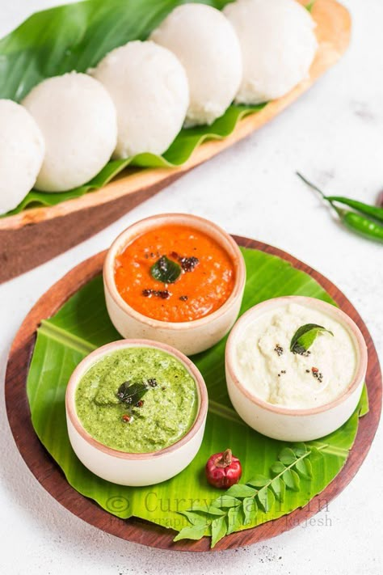

Coconut Chutney
A creamy and refreshing chutney made with coconut and tempered spices – the perfect side for dosa, idli, and vada.

Ingredients
- 1 cup grated fresh coconut
- 2 tbsp roasted chana dal (daliya)
- 1 green chili (adjust to taste)
- 1/2 inch ginger piece
- Salt to taste
- Water as required
- For tempering:
- 1 tsp oil
- 1/2 tsp mustard seeds
- 5-6 curry leaves
- 1 dry red chili
Instructions
- Grind coconut, roasted chana dal, green chili, ginger, salt, and water to a smooth chutney.
- Adjust the thickness with water as needed.
- Heat oil in a small pan and add mustard seeds.
- Once they splutter, add curry leaves and dry red chili.
- Pour this tempering over the chutney and mix well.
- Serve fresh with dosa, idli, vada, or uttapam.